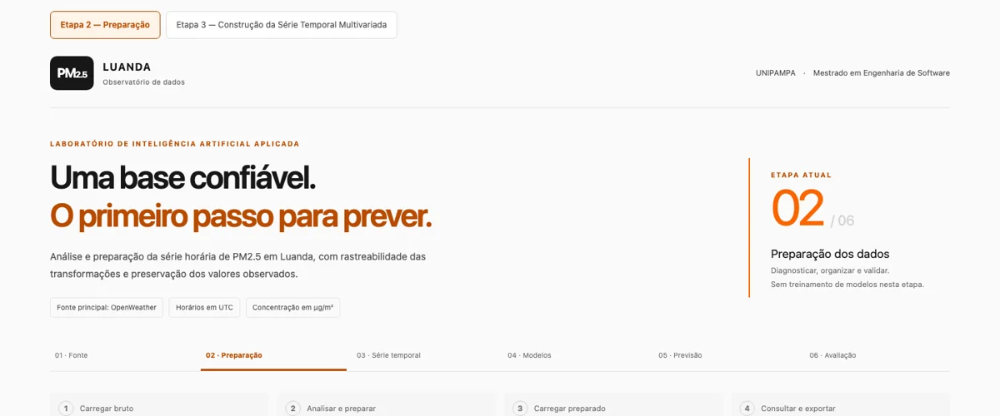

Persistência
Usar a última concentração conhecida como previsão para os próximos horizontes. Uma referência simples para medir o ganho dos restantes modelos.
PlaneadaINTELIGÊNCIA ARTIFICIAL (IA) APLICADA · UNIPAMPA
Investigo como prever a concentração de partículas finas no ar de Luanda com 1, 3 e 6 horas de antecedência, usando o histórico de poluição e meteorologia da OpenWeather.
01 / CONTEXTO
A qualidade do ar começa por aquilo que nem sempre conseguimos ver.
PM2.5 significa material particulado fino. São partículas com diâmetro de até 2,5 micrómetros. A sua dimensão permite que penetrem profundamente no sistema respiratório, tornando-as relevantes para o estudo da qualidade do ar. Fonte: EPA ↗
Neste projecto, investigo a previsão das concentrações de PM2.5 em Luanda, Angola. Procuro perceber como o histórico de poluição e as condições meteorológicas podem apoiar previsões de curto prazo, sem presumir que os dados disponíveis representam toda a variabilidade da cidade.
02 / PROBLEMA E OBJECTIVOS
Desenvolver e avaliar uma abordagem de previsão de curto prazo de PM2.5, comparando modelos de inteligência artificial com uma referência de persistência (baseline): repetir a última concentração conhecida.
03 / PROPOSTA DE SOLUÇÃO
Integrar poluição e meteorologia numa base temporal comum, construir atributos e comparar três abordagens.
Usar a última concentração conhecida como previsão para os próximos horizontes. Uma referência simples para medir o ganho dos restantes modelos.
PlaneadaRandom Forest combina árvores de decisão para estimar valores. Pretendo explorar relações entre concentrações anteriores, variáveis meteorológicas, desfasamentos e atributos de calendário.
PlaneadaLSTM (Long Short-Term Memory) é uma rede neuronal para sequências. Pretendo investigar dependências em janelas da série multivariada, respeitando a ordem temporal.
PlaneadaMAE (erro absoluto médio) resume o tamanho médio dos erros. RMSE (raiz do erro quadrático médio) dá maior peso a erros grandes. Ambos serão expressos em µg/m³ (microgramas por metro cúbico). R² (coeficiente de determinação) será complementar. A avaliação será separada por horizonte e usará os mesmos períodos de teste.
A preparação dos dados está concluída; a persistência, o treino e a avaliação de modelos permanecem planeados. A OpenWeather disponibiliza dados de poluição e meteorologia; as estimativas não substituem observações locais nem permitem atribuir desempenho em campo sem validação independente.
04 / ETAPAS
Da origem dos dados à avaliação prevista: as quatro primeiras etapas estão concluídas. Agora consolido e demonstro a série multivariada; a próxima fase é a persistência.
Obtive poluição e meteorologia da OpenWeather para a preparação histórica.
ConcluídaSuporte e ligações: Marco de consolidação
Examinei a cobertura, os timestamps, as unidades e as duplicações.
ConcluídaSuporte e ligações: Diagnóstico de 29/10/2026
Integrei as fontes numa grade horária UTC, preservando as ausências.
ConcluídaSuporte e ligações: Marco de consolidação · Indicadores de preparação
Construí 39 atributos e conjuntos independentes para 1, 3 e 6 horas.
ConcluídaSuporte e ligações: Critérios de exclusão · Marco de consolidação
Próxima fase: usar a última concentração como previsão de referência.
PlaneadaSuporte e ligações: Comparação prevista
Pretendo ajustar Random Forest e LSTM com separação cronológica.
PlaneadaSuporte e ligações: Modelos previstos
Pretendo comparar os erros por horizonte, usando MAE, RMSE e R².
PlaneadaSuporte e ligações: Métricas e comparação
Pretendo comunicar previsões, erros e limitações após a avaliação.
PlaneadaSuporte e ligações: Resultados e materiais disponíveis
Preservei as ausências, sem imputação de concentrações. A elegibilidade de cada amostra depende do histórico necessário e da disponibilidade do alvo futuro.
Para uma previsão emitida em t, usar apenas entradas disponíveis até t e associar o alvo a t + 1, t + 3 ou t + 6 horas, em fuso e frequência consistentes.
Separar treino, validação e teste por tempo. Ajustar eventuais transformações e selecção de atributos apenas no treino, preservando o teste.
05 / DIÁRIO DE INVESTIGAÇÃO
Concluí a aquisição, a auditoria, a limpeza e integração e a construção da série temporal multivariada, conforme o relatório de consolidação. Agora concentro-me na consolidação e demonstração desta série, antes de implementar a baseline de persistência.
Consolidar uma base multivariada para a previsão de PM2.5 em 1, 3 e 6 horas.
Concluí as quatro primeiras etapas do pipeline: aquisição, auditoria, limpeza e integração e construção da série temporal.
O relatório de consolidação regista 50.904 instantes horários UTC, 49.896 com observações de PM2.5 e 39 atributos temporais. Obtive 49.124, 49.068 e 48.984 amostras elegíveis para os horizontes de 1, 3 e 6 horas, respectivamente. Consultar resultados de preparação.
Preservei as ausências sem imputar concentrações e mantive os conjuntos independentes por horizonte. A disponibilidade de uma hora para ambas as fontes é uma hipótese retrospectiva.
A representatividade local dos dados estimados e a ausência de comprovação de latência operacional limitam a interpretação. Não atribuo uma data a este marco, pois o conteúdo do relatório não a indica.
Pretendo demonstrar a série consolidada e implementar a baseline de persistência. O pré-preenchimento da configuração de demonstração consta como proposta no relatório; não o apresento como implementado.
Etapas relacionadas: aquisição, auditoria, integração e série temporal.
Resultados atribuídos ao relatório de consolidação, conforme as informações fornecidas pelo autor. O ficheiro Word aguarda disponibilização para download.
Investigar a adequação das fontes meteorológicas à futura integração histórica.
Analisei cobertura, timestamps, duplicações, unidades, proveniência e disponibilidade. Examinei os mapeamentos guardados e o significado físico da pressão.
Identifiquei erros de mapeamento e distingui pressão ao nível do mar de pressão à superfície. Este diagnóstico foi exclusivamente de leitura e não executou a integração histórica.
Mantive as fontes e os recursos científicos sem alterações. Não tratei a correcção dos mapeamentos como aprovação automática das fontes.
À data, permaneciam questões de proveniência, unidades, disponibilidade e política de duplicação, além da semântica da pressão.
Propus esclarecer estes pontos antes de uma nova validação e da integração histórica.
Etapa relacionada: auditoria de qualidade.
diagnostico_final_fontes_meteorologicas.md. Documento técnico consultado localmente; não disponibilizado como download por conter caminhos pessoais e referências internas.
Disponibilizar uma apresentação PDF dos resultados e da proveniência da construção multivariada.
Implementei a exportação PDF com proveniência, atributos, alvos, exclusões e verificações, preservando a distinção entre construções validadas e diagnósticos bloqueados.
Os exemplos multivariados desta entrega utilizaram dados controlados de teste. São evidências de engenharia e não resultados empíricos de Luanda.
Identifiquei explicitamente a natureza dos exemplos e não iniciei modelação preditiva.
A construção histórica ainda dependia da validação meteorológica nessa data; o sucesso dos testes controlados não resolvia esse requisito.
Propus resolver as questões das fontes meteorológicas antes de construir a série histórica e avançar para a modelação.
Etapa relacionada: série temporal, na vertente de engenharia da exportação; não equivale à construção histórica nessa data.
implementacao_etapa3_incremento7.md. Documento técnico consultado localmente; não disponibilizado como download por conter caminhos pessoais e referências internas.
06 / RESULTADOS PARCIAIS E MATERIAIS
Resultados de preparação dos dados atribuídos ao relatório de consolidação, conforme as informações fornecidas pelo autor. Não são resultados de previsão.
Fonte dos três indicadores: relatório de consolidação, segundo as informações fornecidas pelo autor. Consultar situação do documento de suporte.
Integrei cinco variáveis meteorológicas: temperatura, humidade relativa, pressão ao nível do mar, velocidade e direcção do vento. Os 39 atributos resultam de desfasamentos de 1, 3, 6 e 24 horas e médias móveis históricas de 3, 6 e 24 horas, conforme a natureza das variáveis.
| Horizonte | Origens analisadas | Amostras elegíveis | Excluídas |
|---|---|---|---|
| 1 hora | 50.904 | 49.124 | 1.780 |
| 3 horas | 50.904 | 49.068 | 1.836 |
| 6 horas | 50.904 | 48.984 | 1.920 |
Unidade: origens/amostras candidatas, num universo de 50.904 instantes por horizonte. Em cada linha, amostras elegíveis + excluídas = origens analisadas. A tabela mede disponibilidade para modelação, não acerto de previsão. Fonte: relatório de consolidação, conforme informações fornecidas pelo autor. Ver etapa de construção · Documento de suporte.
Para cada origem e horizonte, é necessário dispor do histórico exigido pelos atributos e do alvo no instante futuro correspondente. A falta desses elementos pode tornar a amostra inelegível.
Os motivos podem coexistir. Não são atribuídas quantidades a cada motivo, pois essas contagens não estão documentadas nas informações de consolidação disponíveis ao site. Não se deve repartir o total de excluídas por suposição.
As ausências de concentrações foram preservadas, sem imputação; a inclusão de uma hora na grade não cria um valor de PM2.5. Consultar entradas e saídas da série temporal.
Os conjuntos são independentes por horizonte e não devem ser somados como observações distintas. As exclusões estão relacionadas com histórico incompleto e disponibilidade do alvo futuro.
Preservei as ausências, sem imputação de concentrações. Estes totais descrevem a preparação dos dados; o treino e a avaliação preditiva permanecem planeados.
A disponibilidade de uma hora para ambas as fontes é uma hipótese retrospectiva, sem comprovação de latência operacional. Os dados estimados mantêm limitações de representatividade local.
Os relatórios técnicos de 28 e 29 de Outubro foram consultados como suporte dos registos. Contêm caminhos pessoais e referências locais; por isso, não foram incluídos nos downloads públicos.
Explorar o repositório do siteO ficheiro Word ainda não está disponível neste site. Os resultados acima reproduzem as informações fornecidas pelo autor; a ligação de download será acrescentada quando o documento for disponibilizado.
